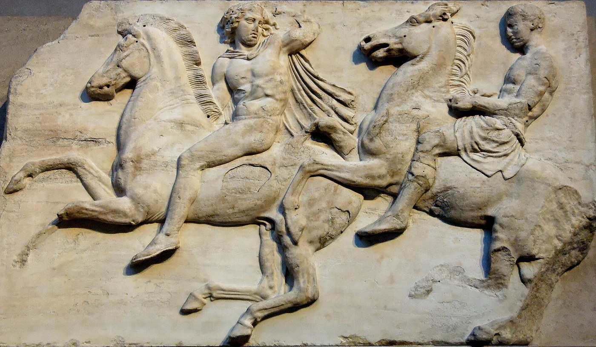
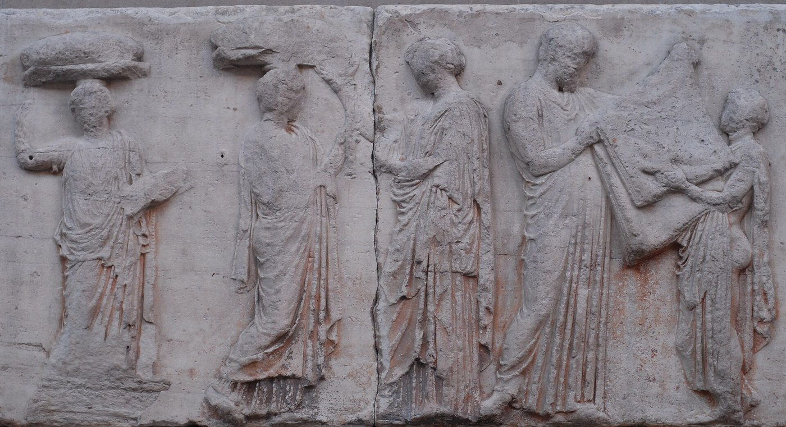

Athens, the Great Panathenaia, about 438 BC · after Phidias

What is known. The Parthenon was built on the Acropolis of Athens between 447 and 438 BC, and its sculpture went on until 432. Plutarch (Life of Pericles 13) names Kallikrates and Iktinos as its builders and says of the whole programme that “his general manager and general overseer was Pheidias”. Phidias made the Athena of gold and ivory that stood inside, installed about 438; Thucydides (2.13) says it carried forty talents of gold, “and it was all removable”. The frieze ran round the top of the inner building, behind the columns: about 160 metres long, a metre high, some 378 figures, carved about 443 to 438. The pediments came last (437 to 432), so in 438 they stood empty, as here. The great gateway, the Propylaia, was begun in 437, and the Erechtheion and the little temple of Nike are later still: in 438 you came in by an older gate. Phidias’ great bronze Athena already stood in the open (Pausanias 1.28.2). In the Agora the Altar of the Twelve Gods, the Royal Stoa, the Painted Stoa, the old council house, the round Tholos, the Aiakeion and the fountain house were standing; the long stoas a visitor sees there today were not. The blocks you saw are in the British Museum, London (the horsemen, west block II; the cattle, south blocks XLV and XLVI; the folded cloth, east block V) and the Louvre, Paris (the girls, east block VII).
The colours you carried. The marble was not left bare: carving was half the work and paint the other half, and the paint is what time has taken. The museum in Athens says the ground behind the frieze figures seems to have been blue, which helped them to be read from far below; that is an inference, and no blue has been reported from the ground of the frieze itself. Some things were never carved at all and existed only in paint: the olive branches of the old men, and the rope that holds a bolting bull on the north side, which is why they are missing now. Other things were added in bronze, such as Athena's spear, and the holes for them remain. In 2023 a team working on the sculptures in London found traces of Egyptian blue, white and a purple, and painted patterns on the clothes of the pediment figures. Which colours the frieze figures wore nobody knows: the game's reds and whites are guesses, and so are the colour-grinders by the road.
What is argued. What the frieze shows is not agreed. Most scholars read it as the procession of the Great Panathenaia, held every fourth summer, which brought a new robe (the peplos) up to the old wooden statue of Athena: this level follows that reading. Others disagree: Joan Connelly (1996) reads the middle scene as a king’s daughter made ready for sacrifice in the story of Erechtheus, and John Boardman (1977) saw in the horsemen the Athenians who died at Marathon. Nor is it agreed who the five figures in the middle are (a priestess, a magistrate and a child are the usual names), who is handing the cloth to whom, or even whether the two girls carry stools or baskets. That the sculpture was painted is certain: Egyptian blue, white and a purple have been found on the stones (a study of 2023), and holes show where bronze reins and spears were fixed. But the blue ground of the frieze is the museums’ likely guess, not a find, and every colour of cloth, skin and horse here is ours. The statue is lost: ours is built from Pausanias (1.24), Pliny (36.18) and a small Roman copy in Athens, the Varvakeion Athena; whether Phidias’ statue had the column under its hand is disputed. Plutarch (31) says Phidias was accused over the gold, put his own likeness on the shield “as a bald old man”, and died in prison; another ancient account, not read for this level, has him go on to work at Olympia.
The ground. The plan is real: the excavated footprints and the line of the Panathenaic Way are OpenStreetMap’s, the walk is 762 metres and nothing is shortened. The heights are today’s, from a coarse European model: the cliffs come out as slopes and the summit about nine metres low. What stood above the foundations is mostly unknown, so walls and roofs are plain. Conjecture throughout: the gate and its steps, the wall beside it, the houses, the state of the unfinished temple on the hill (the Hephaisteion), the wreck of the old temple, the altar, the pose of the bronze Athena, the scaffold, the ornament on the temple’s peak. The old council house stands on the footprint of the building that replaced it. The plane trees rest on a passage of Plutarch that was not checked.
What is ours. The girl, her errand and her late start; her place on the stone as the smaller of the two stool-bearers; Phidias with his tablet; every word spoken or shouted. Above all the turning of people into stone: the frieze was carved in the years before 438 and cannot record that summer’s procession. The horsemen and the chariot overtaking, and the cattle and sheep loose on the ramp, are a game’s devices (the frieze has sheep on its north side only). The metopes and the frieze on the building are drawn small, not copied. “They were created in a short time for all time” is Plutarch on these buildings (Pericles 13, translated by Bernadotte Perrin, 1916).
Photographs, via Wikimedia Commons: west frieze block II and south frieze blocks XLV–XLVI by Marie-Lan Nguyen (Jastrow), 2006, public domain; east frieze block VII (Louvre Ma 738) by Dinkum, CC0; east frieze block V by Twospoonfuls, 2008, CC BY 3.0 (creativecommons.org/licenses/by/3.0), reduced in size. Every texture in this level was painted by a script for it. Plan © OpenStreetMap contributors. Heights: EU-DEM v1.1, European Union, Copernicus Land Monitoring Service. Sources for every statement: research/FINDINGS.md.